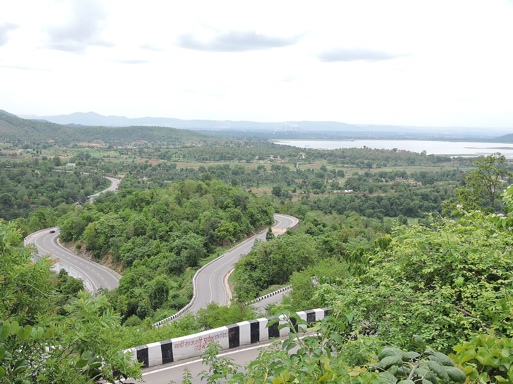
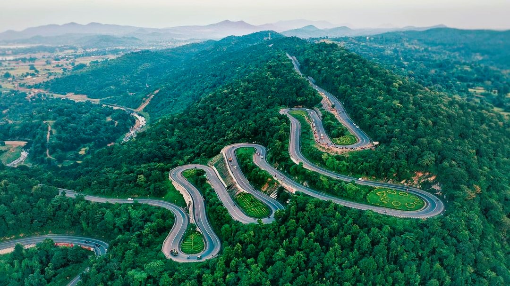
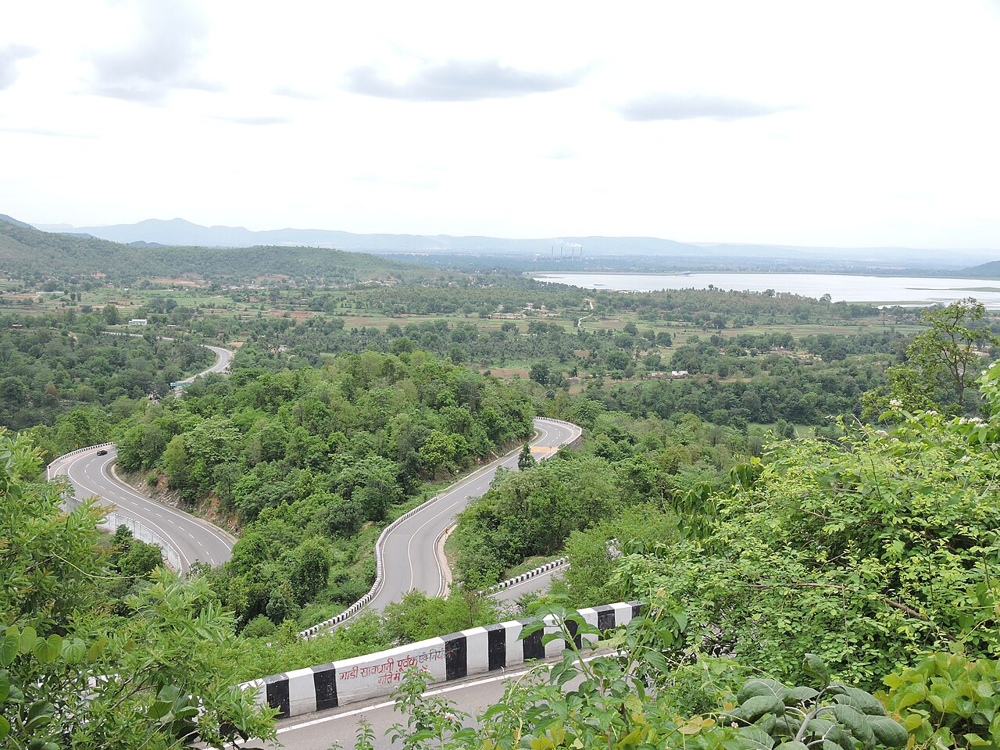
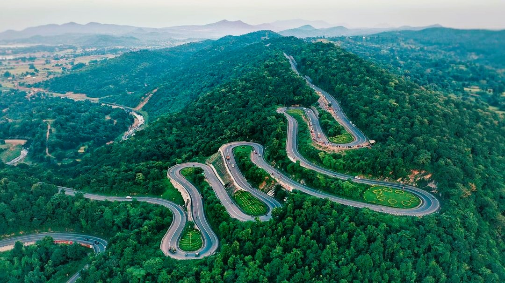

Patratu Valley - Ramgarh
Famous for its breathtaking views, lush greenery & winding roads that offer adventure and picturesque scenery.
 



Patratu Valley is a scenic tourist destination in the Ramgarh district of Jharkhand, known for its lush green hills, winding roads and the Patratu Dam and lake. It is often referred to as the "mini Switzerland of Jharkhand". The area is ideal for a day trip or a relaxing weekend getaway from Ranchi, which is located about 40 kilometers away.
Visitors enjoy the breathtaking views, especially from the winding ghat roads that offer panoramic sights of the valley and the nearby Patratu Dam, which also provides boating facilities. It's a popular spot for nature lovers and adventure seekers who can engage in activities like biking, hiking and birdwatching.
Highlights:
- Visitors can enjoy boating, kayaking and jet-skiing.
- Valley offers mesmerizing sunset views over the water and hills.
- A man-made reservoir built on the Nalkari River is a serene spot for picnics and boating.
- Best time to visit: During the winter months, from October to March, when the weather is cool and pleasant.